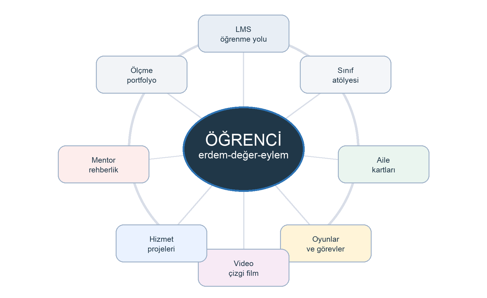

Kurulum masası
Komuta
Ürün omurgası
İslam ahlakı eğitimi için tek merkezden işletilen LMS.
Bu ekran öğrenciye gösterilecek bir vitrin değil; müfredat, ders, oyun, video, aile kartı, öğretmen takibi ve canlıya alma sürecini aynı yerden yöneten kurulum masasıdır.

Emanet ve Güven
- Temel soru
- Bana güvenildiğinde nasıl davranırım?
- Öğrenci çıktısı
- Emanet, mahremiyet ve telafi kararlarını gerekçelendirme.
- Ürün seti
- Mikro video, sınıf oyunu, çalışma sayfası, aile kartı, çizgi film bölümü.
Sistem bileşenleri
Boş demo yerine kurulacak gerçek parçalar
Canlı veri modeli
LMS kayıt omurgası
12 haftalık çekirdek müfredat
Her hafta ders, uygulama, aile ve medya çıktısına bağlanır.
Tüm harita
Hafta planı
Ders stüdyosu
Öğretmenin sınıfta doğrudan uygulayacağı akış.
Seçili modül
Öğrenci üretimi
Portfolyo görevi
Karar simülasyonu
Gerekçeli seçim
İçerik fabrikası
Video, kitapçık, oyun, çizgi film ve aile kartı üretim kuyruğu.
Seçili üretim briefi
İçerik seç
Öğretmen çalışma alanı
Sınıf takibi davranış kanıtı, portfolyo ve aile dönüşü üzerinden yapılır.
Öğrenci listesi
Örnek pilot kayıtları
| Öğrenci | Durum | Kanıt | Öğretmen aksiyonu |
|---|
Rubrik
Dindarlık puanı değil, davranış kanıtı
Aile hattı
Her modül eve baskı kurmadan sohbet ve gözlem kartı olarak gider.
Kart arşivi
12 haftalık aile akışı
Oyun ve video sistemi
Her erdem için kısa medya, sınıf oyunu ve evde izleme paketi.
Ölçme ve güvenlik
Ölçüm, mahremiyet ve pedagojik sınırlar en baştan sisteme konur.
Göstergeler
Ne ölçülür?
Mahremiyet kapıları
Ne ölçülmez?
Olay günlüğü
xAPI hazır izleme dili
Canlılaştırma
Bu MVP, gerçek V1 için kurulum planı ve ürün kabuğudur.
Teknik mimari
V1 üretim sistemi
Sprint planı
Canlı ürüne giden iş listesi
raufenc.com/erdem360
Bu rota Vercel production üzerinden yayında. Şimdiki sürüm statik kurulum masasıdır; kullanıcı hesabı, veritabanı ve CMS bir sonraki gerçek ürün sprintinde eklenecek.